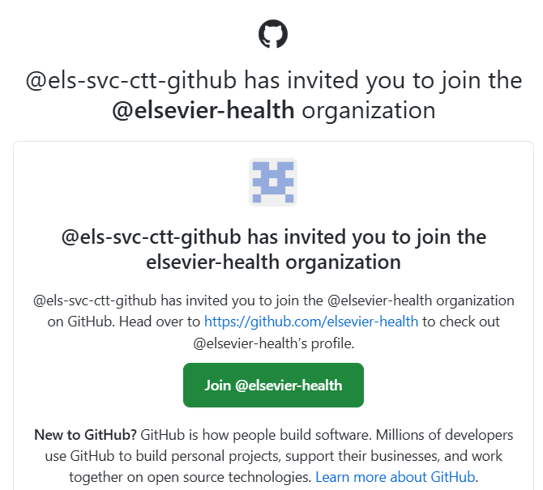
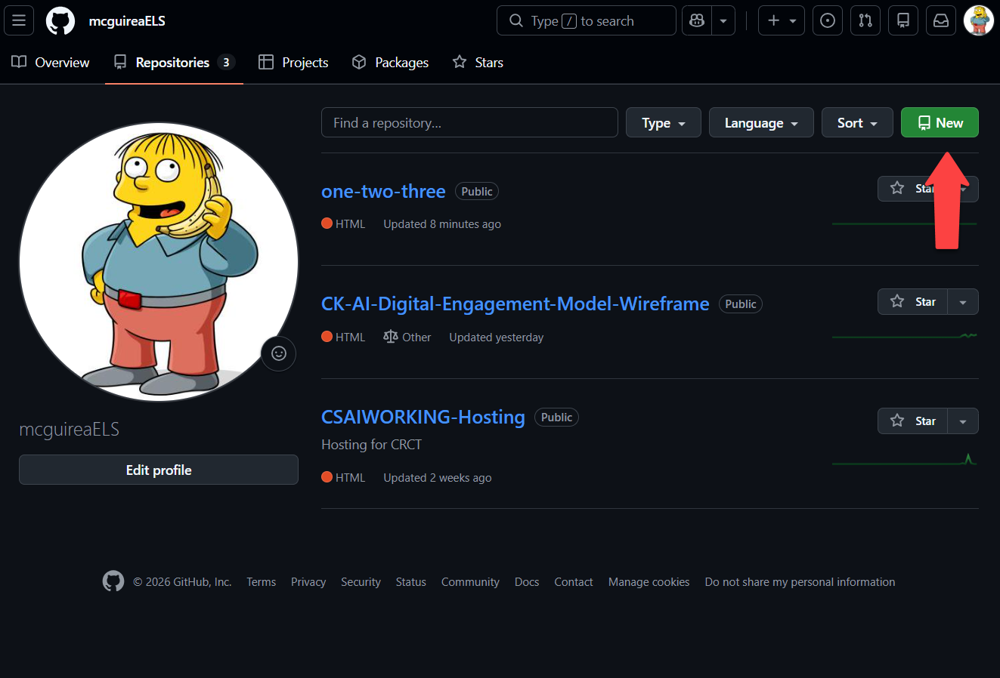
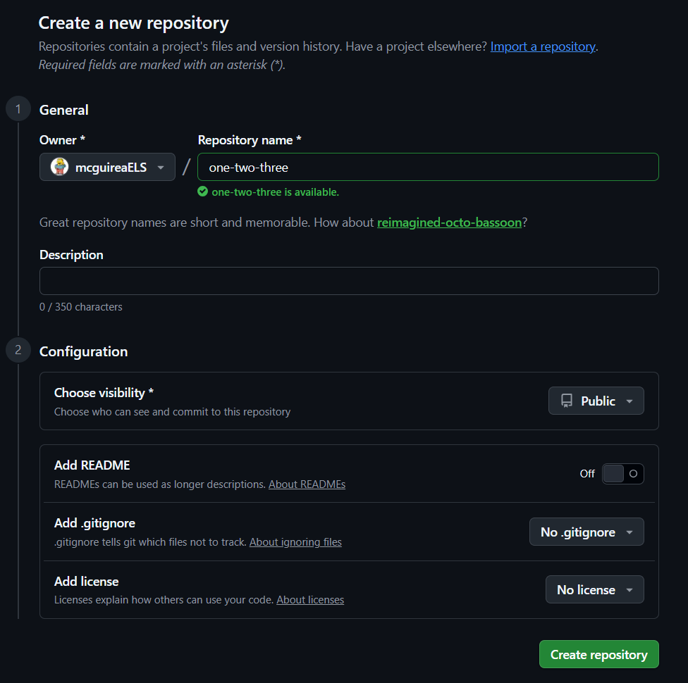
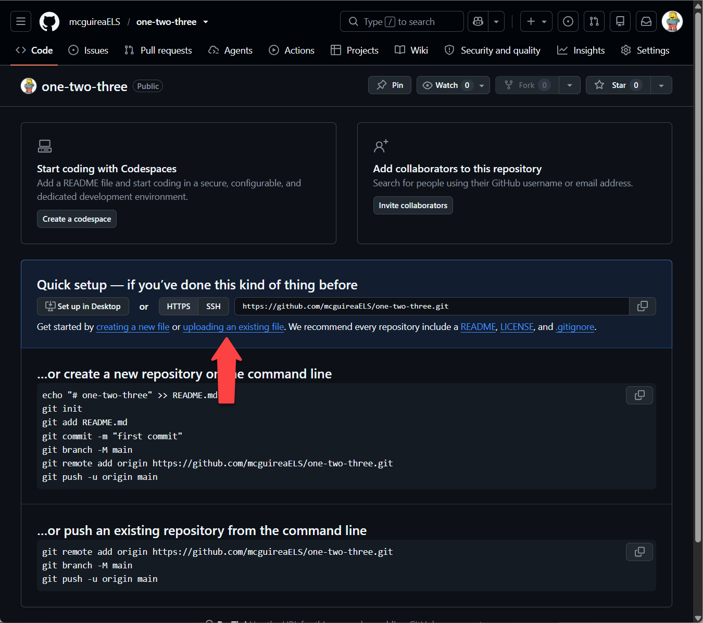
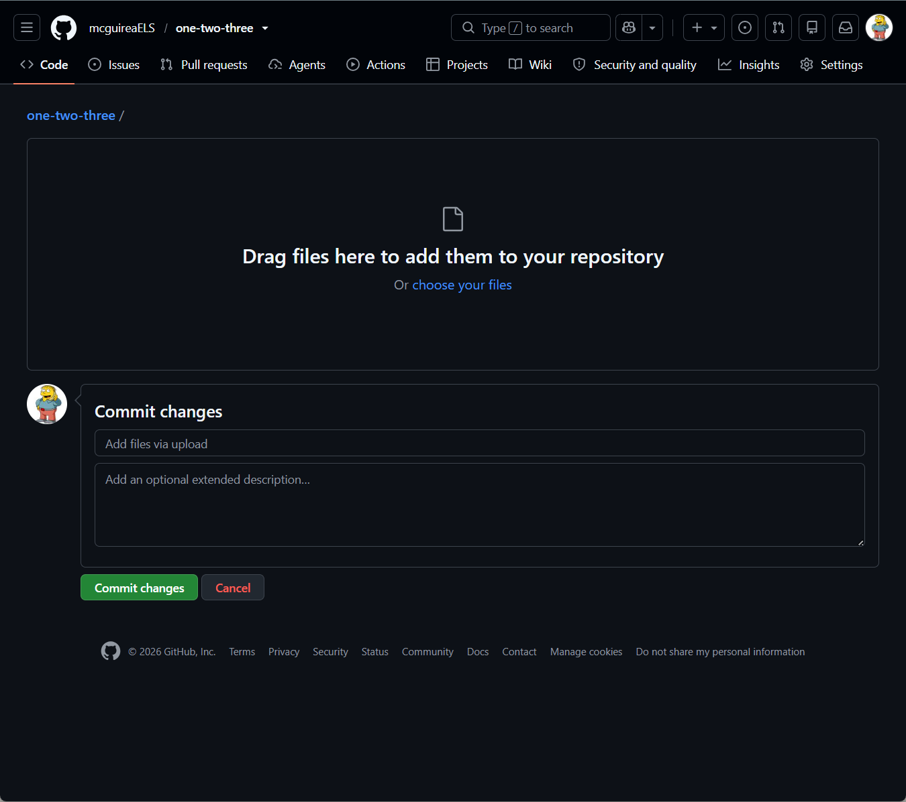
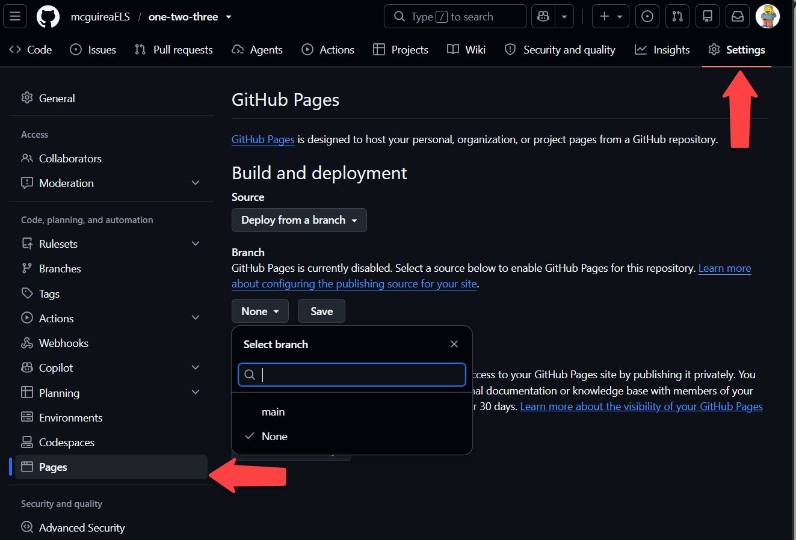
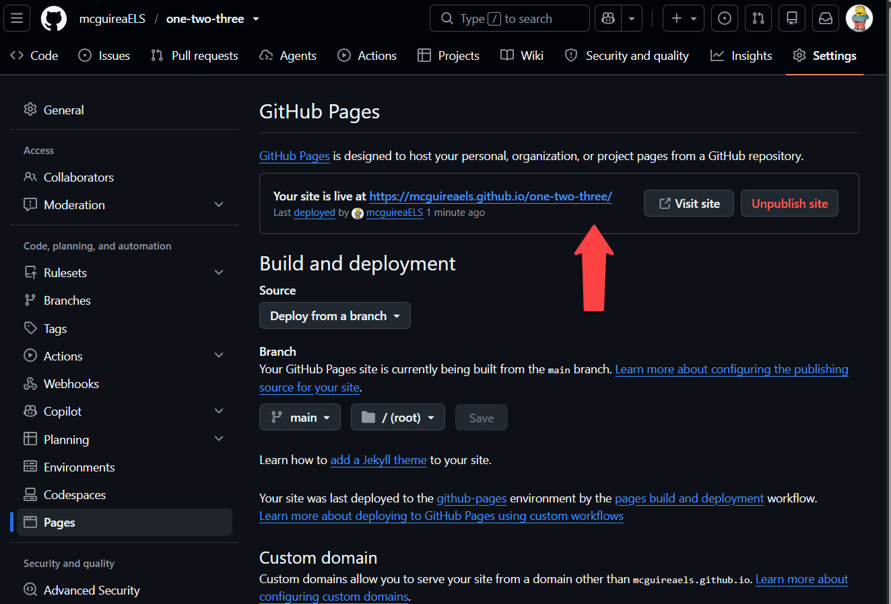
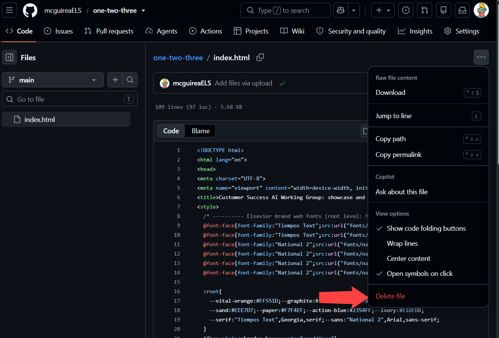
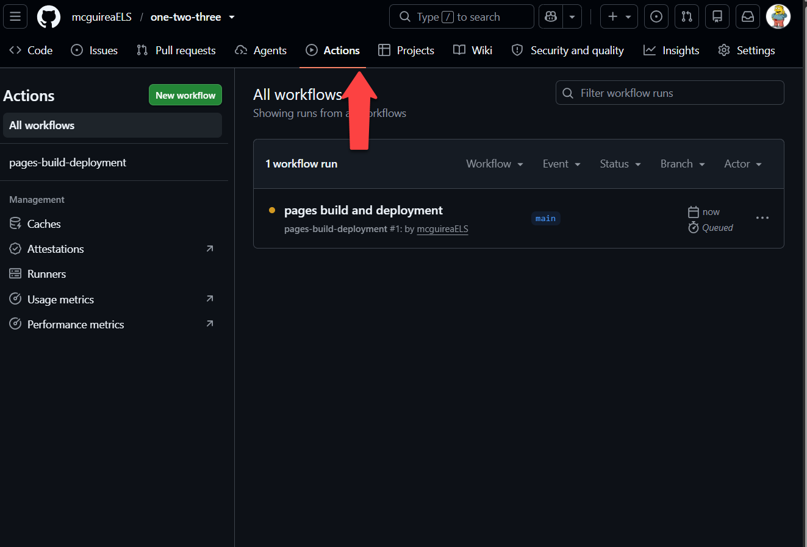

Host an HTML product on GitHub Pages
A repeatable way to take a single HTML file built in Claude and put it online at a real web address, for free, using the GitHub access we already have.
The mental model
A hosted page is just static files (HTML, CSS, fonts, images) served exactly as they are, straight to the browser. An HTML product from Claude is exactly that: one self contained file that runs in the browser with nothing to install. That is why free static hosting fits it perfectly, and why the setup is light.
Before you start: getting access
If you do not have a GitHub account on the Elsevier organization yet, request one first. It is a TechDesk ticket, and you will need your science domain username.
- Raise the ticket: GitHub, Invite User To Organization in the TechDesk service catalog.
- Full documentation: Onboarding to the Elsevier GitHub Enterprise on Confluence.
- Sign out of any personal GitHub account first. If you are still signed in to a personal account when you accept the invite, you can end up linking that personal account to Elsevier, where colleagues can see your other activity.
- Watch the timing. The ticket resolves in a few minutes, but the GitHub invite can take about two hours to arrive, and an unaccepted invite expires after three days.
▶Show me the invitation

If you are coming from SharePoint
Most of this will feel familiar. You put a file somewhere shared, and other people open it from there. Two habits carry straight across.
- Uploading the same filename replaces the old file. It does not create a duplicate, exactly as it works in SharePoint.
- Nothing is lost when you replace it. SharePoint keeps version history. Here, every commit is a version history entry, and you can go back to any of them.
One thing works differently, and it is the one that matters. In SharePoint the file itself is what you send, so calling something report_v2.docx is harmless. Here the web address is tied to the filename. If you upload index_v2.html, your link keeps serving the old index.html and nobody sees your changes.
So always save over the file you already have. Keep the name identical and let the commit history do the versioning. That is what keeps one link working forever, which is the whole reason to host something in the first place.
The one that catches everyone: name it index.html
Your main file has to be called index.html, exactly. If it is called anything else, your live link returns a 404 even though the file uploaded fine. This is the single most common reason a new site does not work.
The reason is a web convention. When someone visits a folder rather than a specific file, the host looks for index.html and serves that. It is the same index file that sits in the root of an e-learning package.
Your first deploy
-
Create a repository
From your repositories list, click the green New button. Give it a clear name, set visibility to Public, and leave everything else alone. A repository is just a folder that remembers its own history.
▶Show me where to click

The green New button sits at the top right of your repositories list. ▶Show me the form

Name the repository, then set visibility to Public. GitHub Pages needs Public on our plan. The README, gitignore, and license settings can stay off. -
Add your files, with the main one named index.html
On the empty repository screen, click uploading an existing file. Drag your
index.htmlin, or use choose your files. If your page uses the brand fonts, upload thefontsfolder alongside it so the relative paths still work. Then write a short message and click Commit changes.Upload your file. Do not use "creating a new file." That option opens a blank text editor for typing content directly into the browser. Your file already exists on your computer, and the editor cannot take fonts or images at all. Upload is the one you want, every time.
/index.html · /fonts/national-2-regular.woff2 · ...▶Show me where to upload

Both options appear on the empty repository screen. Choose uploading an existing file, on the right, not creating a new file on the left. ▶Show me the upload screen

Drag your files into the box, then add a short message and click Commit changes. Nothing is saved until you commit. -
Turn on GitHub Pages
Go to
Settings → Pages. Under Source, choose Deploy from a branch, set the branch tomainand the folder to/ (root), then Save.▶Show me the Pages settings

Settings is in the top row of tabs, Pages is down the left sidebar. Set the branch dropdown from None to main, then Save. -
Get your link
Wait about a minute and refresh the Pages settings. A box appears reading "Your site is live at ..." with the full URL. That link is your shareable address. The pattern is predictable:
https://<your-account>.github.io/<repo-name>/▶Show me where the link appears

Once it has published, a box appears at the top of the Pages settings reading “Your site is live at” with your address. -
Update it anytime
Edit the file in place or re-upload a new version and commit. Within a minute, the same link serves the new version. Nobody needs a new file, and nobody is holding a stale copy.
Adding a README
A README is a plain text file that explains what your repository holds. Two reasons to write one. It is standard practice on GitHub, so anyone who opens your repository expects to find it. And GitHub renders it automatically underneath the file list, so it doubles as a quick reference for how the thing is meant to work.
Add file → Create new file → name it README.md → write → Commit changes
Keep it short. What this is, what is in it, and the live link. If you want the headings and bullets to render, write it in Markdown, which is the .md in the filename. Claude will write the whole thing for you if you ask.
After the first deploy
The first deploy is the hard part. These are the things you will do repeatedly afterwards, and none of them are obvious from the interface.
Upload a new version
Code tab → + next to Code → Upload files → drag or choose → Commit changes
Save over the file you already have. Upload it with exactly the same name and it replaces the old one. You do not need to delete the previous version first, and you should not rename it to v2. The old version stays in your commit history if you ever need it, and your link keeps working because the filename never changed.
Write a commit message
Every change asks you for a message. For a small fix the default is fine, but for anything significant, write a short line saying what changed. It becomes the history of the page, and it is what you will read months later trying to work out when something broke. Claude will write one for you if you ask.
Delete a file
Open the file → ... menu → Delete file → Commit changes
The commit is the part people miss. Nothing actually changes until you commit, so if the file still looks like it is there, that is usually why.
▶Show me the menu

Check whether it has published
Actions tab
Your page is not live the instant you commit. GitHub runs a short build first, usually under a minute. The Actions tab shows it running, and a green check means it has published. If your change is not showing, look here before you start troubleshooting anything else.
▶Show me the Actions tab

Find your live URL
Settings → Pages
The address is shown at the top of that page once the site has published for the first time.
Organizing repositories
There are two sensible patterns, and the right one depends on whether the pieces belong together.
One repository per project
The default, and the simpler choice. Each thing you build gets its own repository and its own link. Six or seven versions of a model means six or seven repositories.
Use this when the pieces are separate deliverables, go to different audiences, or will be updated on their own schedules.
One repository as a hub
A landing page at the root, with each sub page in its own folder. Everything shares one link and one set of fonts.
Use this when the pieces belong together and you want to hand someone a single address.
Worth being explicit, because it is confusing otherwise: the site you are reading right now is the second pattern. It has a landing page at the root and this guide, the basics, and the branding page each in their own folder. The general advice is still the first pattern. Reach for the hub only when the grouping earns its keep.
Things you can ignore for now
Two words you will see in the interface and do not need yet. Here is what they are, so they stop being mysterious, and when they start to matter.
Branches
A branch is a parallel copy of your files, so you can work on changes without touching what is live. For a single page you commit straight to main, which is the only branch you have, and that is fine.
It starts to matter when someone else is editing the same repository, or when you want to try a substantial change without taking the working version down while you figure it out.
Tags
A tag is a bookmark on one specific version, so you can find your way back to it later.
It starts to matter when you want to mark a particular version as meaningful, for example the exact one that went into a pilot, so you can return to it after you have moved on.
Presenting it
When you are showing a page to a room, put the browser in fullscreen first. It hides the tabs, the address bar, and your bookmarks, which is the difference between something that looks like a browser tab and something that looks like a product.
- Windows: press
F11. Press it again to come back out. - Mac: press
ControlCommandF, or use the green button.Escexits. - Either way, open the page and go fullscreen before you share your screen, not after, so nobody watches you rummage through tabs.
Worth knowing
- Each subfolder needs its own
index.htmltoo, for the same reason the root does. - Public only, unless paid. Pages serves from public repositories on our plan. Do not put anything confidential in a public repo.
- Give the first deploy a minute. If the live link 404s right away, wait and hard refresh. First builds are the slowest.
- Fonts live in a
/fontsfolder and are referenced with relative paths, so the folder must travel with the HTML. - Not for apps that need a database or a login. Static hosting is for self contained pages. A single interactive HTML piece is the ideal case.